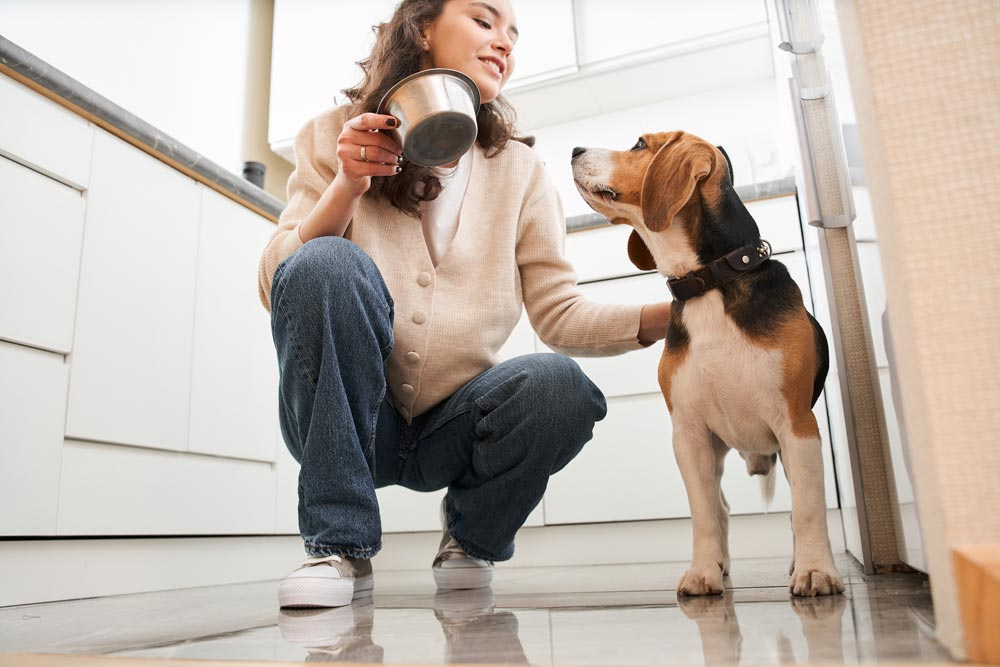
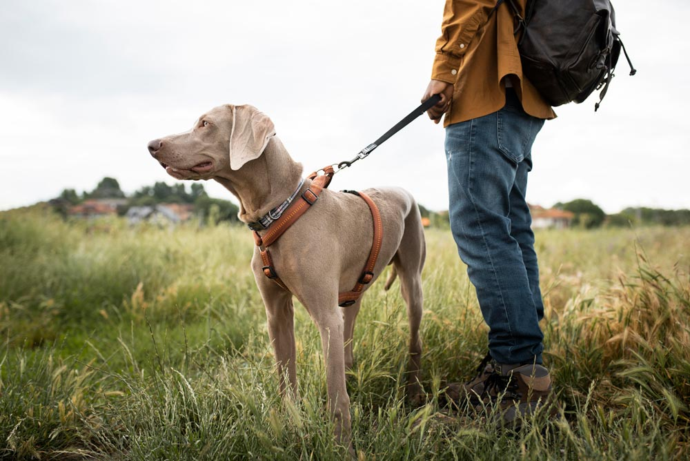
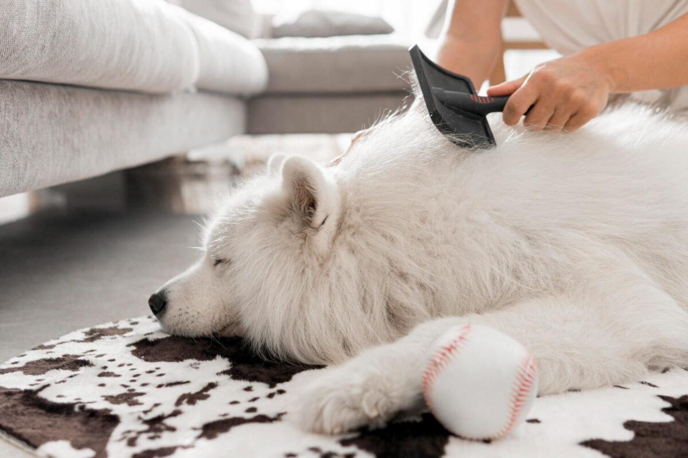
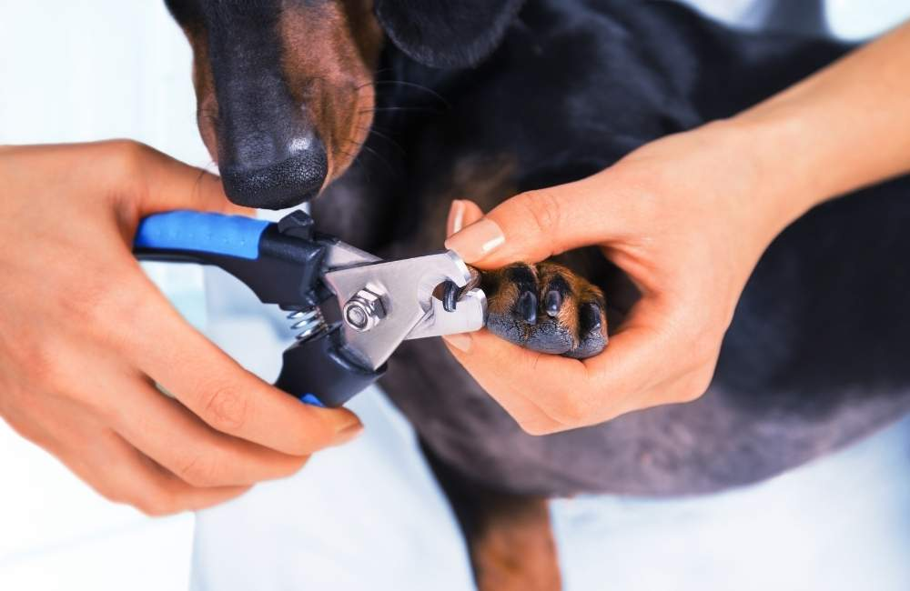
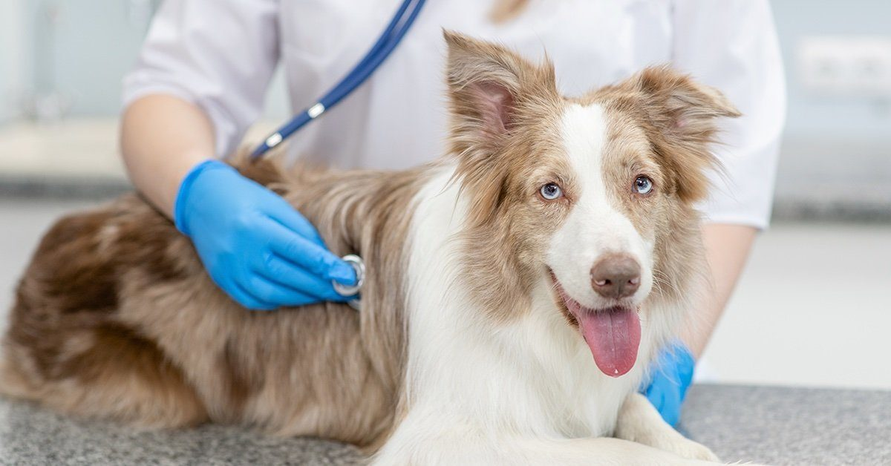
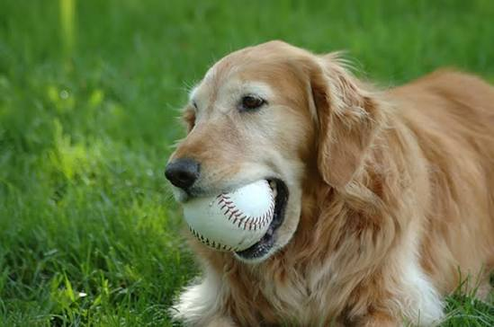

A kutya gondozása nemcsak etetésből és sétáltatásból áll. A megfelelő táplálás, mozgás, higiénia és szeretetteljes törődés mind fontos ahhoz, hogy kedvencünk egészséges és boldog legyen.
Adj a kutyának korának, méretének és igényeinek megfelelő táplálékot.

A napi séta és játék fontos a kutya testi és lelki egészségéhez.

Rendszeresen fésüld meg a kutyát, és szükség esetén fürdesd meg.

Figyelj a kutya fogainak és karmainak megfelelő ápolására.

A rendszeres állatorvosi vizsgálatok segíthetnek megőrizni a kutya egészségét.

A közös játék, tanítás és törődés hozzájárul ahhoz, hogy a kutya boldog legyen.
